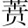

青霞沈君名煉，字純甫，會稽人。，由錦衣經歷上書詆宰執。宰執深疾之，方力構其罪，賴天子仁聖，特薄其譴，徙之塞上先生抗疏言嚴嵩父子誤國，請戮之以謝天下。詔榜之數十，謫出塞外。。當是時，君之直諫之名滿天下橫插一句，妙。。已而君累然攜妻子出家塞上。會北敵數內犯，而帥府以下束手閉壘，以恣敵之出沒，不及飛一鏃以相抗。甚且及敵之退，則割中土之戰沒者與野行者之馘國。以為功。而父之哭其子，妻之哭其夫，兄之哭其弟者，往往而是，無所控籲預。○曠職冒功，毒害生民，今古一轍。。君既上憤疆場之日弛，而又下痛諸將士日菅奸。刈我人民以蒙國家也指上一段言。。數嗚咽欷歔，而以其所憂鬱發之於詩歌文章，以洩其懷，即集中所載諸什是也出詩文之有集，多少曲折。。
君故以直諫為重於時，而其所著為詩歌文章又多所譏刺，稍稍傳播，上下震恐，始出死力相煽構，而君之禍作矣宰執、帥府恨先生切骨，竄名白蓮教中，戮於邊。○先生垂名千載，全從此禍得來，未足為恨。。君既沒，而一時閫寄所相與讒君者，尋且坐罪罷去。又未幾，故宰執之仇君者亦報罷。而君之門人給諫俞君，於是裒輯其生平所著若干卷，刻而傳之。而其子以敬，來請予序之首簡出作序意。。
茅子受讀而題之曰：若君者，非古之志士之遺乎哉喝一句。？孔子刪《詩》，自《小弁》之怨親，《巷伯》之刺讒以下，其忠臣、寡婦、幽人、懟士之什，並列之為「風」；疏之為「雅」，不可勝升。數上聲。。豈皆古之中聲也哉？然孔子不遽遺之者，特憫其人，矜其志，猶曰「發乎情，止乎禮義」, 「言之者無罪，聞之者足以為戒」焉耳刪《詩》不必皆中聲，獨見其大。。予嘗按次《春秋》以來，屈原之《騷》疑於怨，伍胥之諫疑於脅，賈誼之疏疑於激，叔夜之詩疑於憤，劉之對疑於亢，然推孔子刪《詩》之旨而裒次之，當亦未必無錄之者上引《小弁》、《巷伯》，此引屈原、伍胥諸人，俱以孔子夾寫，正極力推尊處。。君既沒，而海內之薦紳大夫至今言及君，無不酸鼻而流涕。嗚呼！集中所載《鳴劍》、《籌邊》諸什，試令後之人讀之，其足以寒賊臣之膽，而躍塞坦戰士之馬，而作之愾也，固矣二十三字，作一氣讀。。他日國家採風者之使出而覽觀焉，其能遺之也乎？予謹識之應「遺」字收。。
至於文詞之工不工，及當古作者之旨與否，非所以論君之大者也，予故不著結有餘波。。
先生生平大節不必待文集始傳。特後之人，誦其詩歌文章，益足以發其忠孝之志，不必其有當於中聲也。此序深得此旨，文亦浩落蒼涼，讀之凜凜有生氣。
二〇二二年五月二十七日 一校完成